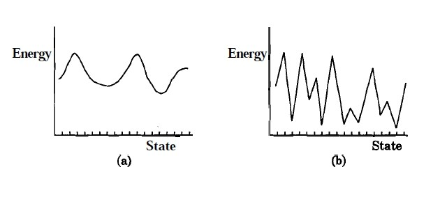

Computer Science & Engineering →Artificial Neural Networks Virtual Lab →List Of Experiments
Hopfield model for pattern storage task
Pattern storage network
Pattern storage is generally accomplished by a feedback network consisting of processing units with non-linear output functions. The outputs of all the processing units at any instant of time define the output state of the network at that instant. Associated with each output state is an energy, which depends on the network parameters like the weights and bias, besides the state of the network. The energy as a function of state corresponds to an energy landscape. The feedback among the units and the non-linear processing in the units may create basins of attraction in the energy landscape, when the weights satisfy certain constraints. The basins of attraction in the energy landscape tend to be the regions of stable equilibrium states. The fixed points in these regions correspond to the state of the energy minima, and they are used to store the desired patterns. These stored patterns can be recalled even with approximate patterns as inputs. The number of patterns that can be stored is called the capacity of the network. The following figures illustrates the concept of energy landscape. Figure 1(a) shows the energy landscapes with each minimum state supported by several nonminimum states around its neighbourhood. Figure 1(b) does not have any such support for the minimum states. Hence patterns can be stored if the energy landscape of the type in Figure 1(a) is realized by suitable design of the feedback network.
|  |
The Hopfield Model
We use Hopfield model of a feedback network for addressing the task of pattern storage. The perceptron neuron model for the units of a feedback network is used, where the output of each unit is fed to all the other units with weights \(w_{ij}\), for all i and j. Let the output function of each of the units be bipolar (+1 or -1), so that
\( (s_i) = f(x_i) = sgn(x_i) \qquad(1)\)
and
\(x_i = \sum\limits_{j=1}^{N} w_{ij}s_j-\theta_i \qquad(2)\)
where \(\theta\) is the threshold for the unit i. Due to feedback, the state of a unit depends on the states of the other units. The update of the state of a unit can be done synchronously or asynchronously. In an asynchronous update, the updating using the random choice of a unit is continued until no further change in the states takes place for all the units. That is,
\( s_i(t+1) = s_i(t),\) for all i
In this situation we can say that the network activation dynamics reached a stable state.
Hopfield Network Algorithm to Store and Recall a Set of Bipolar Patterns
Let the network consist of N fully connected units wih each unit having hard-limiting bipolar threshold output function. Let \( a_l , l\) = 1,2, ...., L be the vectors to be stored. The vectors \(a_l\) are assumed to have bipolar components, i.e., \(a_{li}\) = ± 1, i = 1,2, ...., N.
- Assign the connection weights \begin{align} w_{ij} = \frac{1}{N}\sum\limits_{l=1}^{L}a_{li}a_{lj}, for ~ i \ne j \\ = 0, for ~ i = j, 1 \le i, j \le N \qquad(3)\\ \end{align}
- Initialize the network output with the given unknown input pattern a $$ s_i(0) = a_i, for ~ i = 1, 2, ....,N \qquad(4)$$ where \( s_i(0)\) is the output of the unit \(i\) at time \( t=0 \)
- Iterate until convergence $$ s_i(t+1) = sgn \left [\sum\limits_{j=1}^{N}w_{ij}s_j(t) \right ], for ~ i = 1, 2, ....,N \qquad(5)$$ The process is repeated until the outputs remain unchanged with further iteration. The steady outputs of the units represent the stored pattern that best matches the given input.
Energy analysis and State Transition Diagram
The energy V(s) as a function of the state s of the network describes the energy landscape in the state space. Its value always either reduces or remains the same as the state of the network changes. Assuming the threshold value of the unit i to be \( \theta_i \), the energy function is given by $$ V(s) = V = -\frac{1}{2}\sum\limits_{i}\sum\limits_{j}w_{ij} s_i s_j + \sum\limits_{i}\theta_i s_i \qquad(6)$$
The energy analysis of the Hopfield network shows that the network either remains in the same state, or moves to a state having a lower energy. This can be demonstrated by means of a state transition diagram which gives the states of the network and their energies, together with the probability of transition from one state to another.